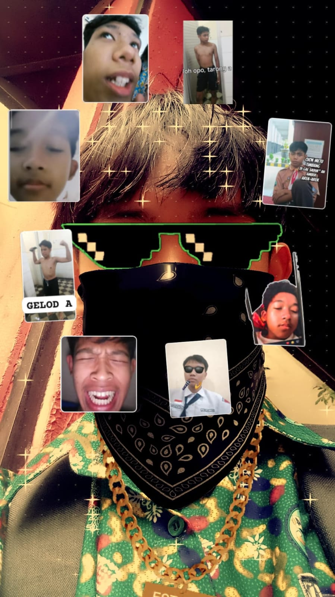

Halo, saya
Arya Dwimulya
Siswa SMK Jurusan Rekayasa Perangkat Lunak
SMK Negeri 4 Malang. Saya suka mengubah ide menjadi karya nyata dan sedang bersiap masuk dunia kerja.
Lihat Proyek Hubungi Saya
Tentang Saya
Cerita singkat tentang sekolah, jurusan, minat, dan cita-cita saya.
Saya bersekolah di SMK Negeri 4 Malang dan mengambil jurusan Rekayasa Perangkat Lunak (RPL). Di sekolah, kami belajar langsung lewat praktik di laboratorium komputer.
Minat terbesar saya ada di pembuatan website. Saya senang ketika coretan ide berubah menjadi halaman yang bisa dibuka orang lain.
Setelah lulus, saya ingin bekerja sebagai web developer, lalu melanjutkan kuliah sambil bekerja.
Kompetensi dan Keahlian
Mata pelajaran kejuruan, tools yang dikuasai, dan sertifikat.
Mapel Kejuruan
Tools dan Software
Sertifikasi
- Juara 3 Lomba Mobile Legends2025
- Best Jungler Babak Penyisihan2025
- Juara Harapan 2 Mobile Legends2024
- Top Global Julian No. 772025
Proyek dan Karya
Klik "Lihat detail" pada kartu untuk membaca ceritanya.
UI UX Website Snackjoy untuk UMKM
Sistem Pemesanan Online
Lihat detail
Ada fitur pencarian, keranjang belanja, dan sistem pembayaran.
Teknologi: Figma, HTML, CSS
Aplikasi Minimarket Kasir
Pembelian dan Penjualan Barang
Lihat detail
Pembelian dan Penjualan Barang
Teknologi: HTML, CSS, JavaScript, PHP

Kalkulator Statistik Deskriptif
Alat untuk menghitung statistik deskriptif.
Lihat detail
Berisi hasil analisis, visualisasi data, dan perhitungan statistik.
Teknologi: HTML, CSS
Prestasi dan Kegiatan
Lomba, organisasi sekolah, dan pengalaman kepanitiaan.
Juara 3 Lomba Mobile Legends
Mengikuti lomba Mobile Legends dan meraih juara 3.
Best Jungler Babak Penyisihan
Mengikuti lomba Mobile Legends dan meraih posisi terbaik sebagai jungler.
Juara Harapan 2 Mobile Legends
Mengikuti lomba Mobile Legends dan meraih juara harapan 2.
Top Global Julian No. 77
Mengikuti lomba Mobile Legends dan meraih posisi terbaik sebagai jungler.